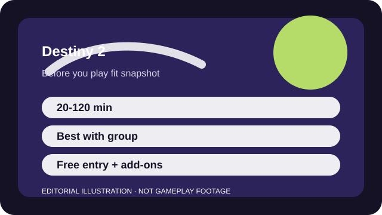

BEFORE YOU PLAY
What this page is and is not
This is a sourced editorial fit profile. It is designed to help with a yes-or-no play decision, and it does not claim a scored hands-on review.
The biggest fit question is whether you enjoy chasing gear across a changing seasonal structure. If you do, the shooting and raids can carry a lot of complexity. If not, the storefront and content layers can feel messy quickly.
The first-session loop to judge is simple: Shoot through activities that feel excellent moment to moment, then use loot and build options to open harder co-op goals.
Power, exotics, subclasses, and rotating activities create a strong weekly rhythm once you understand what you actually own.

FIT SNAPSHOT
Destiny 2 at a glance
| Genre | Online action shooter |
|---|---|
| Platforms | PC, PlayStation, Xbox |
| Business model | Free-entry online shooter with paid expansions, dungeons, and seasonal content layers. |
| Typical session | 20-120 minutes depending on whether you are doing quick activities or organized endgame. |
| Play style | loot shooter with co-op endgame |
| Learning barrier | Destiny 2 is easy to enjoy at the trigger-pull level, but ownership structure and endgame systems can confuse new players. |
| Social shape | Patrols and some playlists work solo, yet the most memorable content is built around a regular group. |
WHO IT FITS
Best fit, likely friction, and the social reality
players who want polished shooting plus long-form co-op goals like dungeons and raids
players who want simple storefront clarity or a fully self-contained free campaign
Patrols and some playlists work solo, yet the most memorable content is built around a regular group.
Power, exotics, subclasses, and rotating activities create a strong weekly rhythm once you understand what you actually own.
FIRST SESSION PLAN
How to test the fit in one evening
- Play the introductory path and confirm what campaigns or expansions your account really includes.
- Keep one favorite weapon type equipped long enough to learn how the sandbox feels.
- Treat the early menus as a map of content ownership, not a sign that you must buy everything at once.
- Decide whether group endgame sounds exciting before spending on deeper add-ons.
Use the first session to answer these fit questions instead of judging rank, win rate, or store value immediately.
- Do you want raids and dungeons, or do you mainly want satisfying shooting for a few hours?
- Will changing seasonal packaging confuse you or feel manageable once you know the structure?
- Are you willing to buy expansions only after the free layer proves itself?
TIME, COST, AND COMMITMENT
What you are really signing up for
| Session budget | 20-120 minutes depending on whether you are doing quick activities or organized endgame. |
|---|---|
| Social demand | Patrols and some playlists work solo, yet the most memorable content is built around a regular group. |
| Progression shape | Power, exotics, subclasses, and rotating activities create a strong weekly rhythm once you understand what you actually own. |
| Spending pressure | The free entry layer is real, but major campaigns, dungeon keys, and seasons often sit behind paid additions. |
You can enjoy strikes or short story sessions casually, but meaningful long-term participation often means scheduling around resets or friends' availability.
The free entry layer is real, but major campaigns, dungeon keys, and seasons often sit behind paid additions.
SOURCES AND LIMITS
What was checked, and what can change
- Active expansions, seasons, and bundles change over time.
- Activity rotation and power targets can move what counts as the best beginner path.
- Cross-save or account-link expectations should always be rechecked on Bungie's live pages.
This profile uses official game pages and defensible general product knowledge to frame the player fit. It does not claim live testing across every platform, accessibility need, or current event rotation.